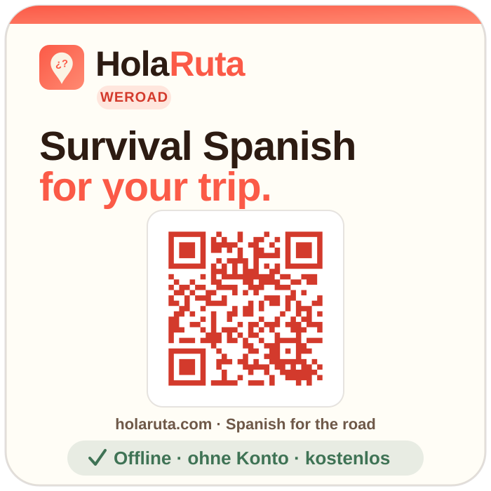

Partnerschafts-Vorschlag · WeRoad Colombia
Der Reise-Spanisch-Begleiter, gebaut für genau eure Kolumbien-Route
Eine leichte Offline-App, die WeRoadies vor, während und nach der Reise sicherer und neugieriger macht – Taxi, Unterkunft, Essen, Geld, Notfall, Smalltalk und kleine Gruppen-Challenges. Kein Sprachkurs, sondern ein Travel-Language-Companion, der direkt auf euren Markenkern einzahlt: kleine Gruppen, Community, echte lokale Momente.

So sieht der Sticker fürs Hostel-Regal / den Bus gedruckt aus – ein Scan, kein Download.
Warum das passt
Nicht irgendein Sprach-Tool – eures
Vier Gründe, warum HolaRuta nicht neben eurer Marke steht, sondern sie verstärkt.
Soziale DNA
Eure Reisen leben von kleinen, altershomogenen Gruppen und gemeinsamen Momenten. HolaRuta hat genau dafür einen Gruppenmodus mit Sprach-Battles und Rollenspielen – ein fertiger 5-Minuten-Icebreaker, den der Coordinator jederzeit im Bus startet.
Direkt auf der Route
Bogotá → Kaffeeregion → Medellín/Guatapé → Karibikküste → Cartagena: das Kolumbien-Paket ist wortwörtlich für diese Stationen geschrieben, inkl. Metrocable, Willys-Jeep und Islas-del-Rosario-Boot. Details & Beispielsätze weiter unten ↓
Mehr Mut, weniger Hilflosigkeit
Wer selbst einen tinto bestellt, nach dem vuelto fragt oder beim Salsa-Abend mitredet, erlebt die Reise intensiver – und erzählt davon. Das ist Reisequalität, nicht „Vokabeln pauken".
Null Reibung
Offline-PWA, kein App-Store, kein Konto, keine Werbung – nur ein QR-Code. Funktioniert auch im Bus ohne Empfang, in Tayrona genauso wie in der Comuna 13.
Ablauf
Die Reise in drei Phasen
Kein Zufallsprinzip, sondern ein durchdachter Bogen von der Vorfreude bis zum Nachhall.
Vor der Reise – die Vorfreude beginnt 2 Wochen früher
Ein geordneter 7-Tage-Pre-Trip-Plan: jeder Tag schaltet den nächsten frei und endet mit einer kleinen Real-Life-Challenge. Tag 1 Begrüßung & Höflichkeit · Tag 2 Taxi & Ankunft · Tag 3 Unterkunft · Tag 4 Essen & Trinken · Tag 5 Geld & Markt · Tag 6 Unterwegs & Orientierung · Tag 7 Ausgehen. Die Gruppe steigt schon vor dem Abflug ins Reisegefühl ein.
Unterwegs – das 5-Minuten-Tool für den Coordinator
Ein Tap startet eine Gruppen-Battle-Runde („Modo hostal → 5-Minuten-Icebreaker"): einer fragt, einer antwortet, der Rest bewertet. Dazu Rollenspiele, Real-Life-Missions („Bestell den nächsten jugo natural auf Spanisch") und ein offline-Spickzettel mit Notfall-Sätzen – auch ohne Empfang im Bus oder in Tayrona.
Nach der Reise – ein digitales Souvenir
Sammel-Stempel, gemeisterte Challenges und ein persönliches Sharepic bleiben auf dem Gerät. Die App ist installiert, das Spanisch ein bisschen besser – ein netter Nachhall, der die Community-Bindung verlängert und Lust auf die nächste Reise macht.
Route ↔ Inhalt
Was zu welcher Station passt
Alle Sätze stammen 1:1 aus der App – mit Aussprache-Hilfe, Reise-Kontext und kolumbianischen Eigenheiten (parce, tinto, vuelto, a la orden, bacano).
Bogotá & Anden
La Candelaria · Monserrate · Höhe
Kaffeeregion
Salento · Valle del Cocora · finca
Medellín & Antioquia
Metro · Comuna 13 · Guatapé
Karibikküste
Santa Marta · Tayrona · Minca · Palomino
Cartagena & Inseln
Getsemaní · Centro · Islas del Rosario
Essen, Geld & Alltag
überall auf der Reise
Ausgehen & Community
Salsa · Champeta · Parche
Sicherheit & Orientierung
für den ganzen Trip
Plus Notfall-/Apotheken-Sätze offline im Spickzettel.
Abgleich mit den realen WeRoad-Reisen (Stand Juli 2026): Das Paket deckt den kompletten WeRoad-Bogen ab – Bogotá, die Kaffeeregion (Salento / Valle del Cocora / Kaffee-Finca), Medellín/Guatapé, die Karibikküste (Santa Marta, Tayrona, je nach Variante Minca / Palomino) und Cartagena mit Islas del Rosario und Salsa-Klasse. Die zuvor offene Kaffeeregion ist mit 14 eigenen Karten ergänzt – damit hat jede Signature-Station ihr eigenes Reise-Vokabular.
Für den Coordinator
5-Minuten-Bausteine, ohne Vorbereitung
Bus-Icebreaker
Eine schnelle Battle-Runde zum Aufwärmen der Gruppe.
Themen-Warm-up
Vor dem Salsa-Abend „¡Vamos a bailar!" & Co. üben, vor dem Markt die Geld-Sätze.
Real-Life-Mission
„Wer bestellt heute den ersten tinto auf Spanisch?" Kleine Mutprobe, großer Effekt.
Rollenspiel zu zweit
Taxi, Hostel-Checkin oder Bestellung im Restaurant.
Wichtig: Der Coordinator braucht keine Vorbereitung und kein Spanisch-Niveau. Ein Tap startet die Runde, die App moderiert. Gedacht als 5-Minuten-Auflockerung, nicht als Unterricht.
Co-Branding
Die „WeRoad Colombia Edition"
HolaRuta lässt sich als eigene Edition ausspielen: WeRoad-Akzentfarbe (Koralle, oben im Farbverlauf zu sehen), ein angepasster Name und Kolumbien als voreingestelltes Ziel. Technisch ist das eine Build-Variante – kein Fork, keine zweite Codebasis. Partner-Logo und -Name verwenden wir erst nach eurer ausdrücklichen Freigabe; bis dahin bleibt die Edition neutral co-branded (nur Akzentfarbe + Textzusatz). Diese Seite ist bereits in der Koralle gehalten, damit ihr den Look direkt seht.
Kein Fork, ein Build-Flag Kein Konto in dieser Edition nötig Logo erst mit Freigabe
Partnerschaft & Preise
Ehrlich und einfach
Wir starten mit einem kostenlosen Pilot. Erst wenn es bei euren Reisenden ankommt, reden wir über eine faire Lizenz.
Pilot
1 Kolumbien-Gruppe, Feedback statt Verkauf
Destination Pack
Colombia Edition
Kolumbien-Inhalt + Coordinator-Material + Co-Branding
Jahres-Partnerlizenz
laufender Einsatz über viele Reisen/Routen
Per-Seat (Roadmap)
pro Reisendem – erst bei Volumen, optional statt Pauschale
Per-Seat-Abrechnung setzt eine Account-/Sync-Ebene voraus, die heute (bewusst) noch nicht existiert – sie ist Roadmap, kein Bestand. Der Einstieg braucht sie nicht.
Konkret
Der Pilot-Vorschlag
- Eine einzige Kolumbien-Gruppe (5–10 Reisende) testet HolaRuta – 2 Wochen Pre-Trip-Plan vorab, unterwegs als Coordinator-Tool.
- Wir liefern fertig: das Kolumbien-Paket, die Coordinator-Anleitung und das QR-Material.
- Danach sammeln wir ehrliches Feedback ein – Nutzen, Verständlichkeit, Spaß, fehlende Situationen. Kein offizieller Beschaffungsprozess nötig.
- Passt es, machen wir daraus eine WeRoad Colombia Edition und reden über die Lizenz.
Nächste Schritte
Wäre das für eure Kolumbien-Reisen nützlich?
Am einfachsten über einen Warm-Intro (z. B. eine Reiseleiterin), die das einmal ausprobiert und intern den richtigen Kontakt herstellt – Product, Partnerships, Operations oder Community/DACH. Die wichtigste Frage ist nicht „kauft ihr das?", sondern „wäre das nützlich, und wen müsste man dafür ansprechen?"
Live-Demo öffnen ↗✉️ hola@holaruta.com
Hinweis: Die App-Oberfläche ist Deutsch/Englisch; die Lerninhalte sind kolumbianisches Reise-Spanisch.
Offline · kein Konto · kostenlos testbar · Kontakt: hola@holaruta.com · Stand: Juli 2026 · „WeRoad" wird nur mit Freigabe des Partners verwendet.
Partnership proposal · WeRoad Colombia
The travel-Spanish companion, built for your exact Colombia route
A lightweight offline app that makes WeRoadies more confident and curious before, during and after the trip – taxi, accommodation, food, money, emergencies, small talk and small group challenges. Not a language course, but a travel-language companion that feeds straight into your brand core: small groups, community, real local moments.
The printed sticker for the hostel shelf or the bus – one scan, no download.
Why it fits
Not just any language tool – yours
Four reasons HolaRuta doesn't sit next to your brand, but reinforces it.
Social DNA
Your trips run on small, age-similar groups and shared moments. HolaRuta has a group mode built for exactly that – language battles and role-plays, a ready 5-minute icebreaker the coordinator can start on the bus any time.
Right on the route
Bogotá → coffee region → Medellín/Guatapé → Caribbean coast → Cartagena: the Colombia pack is written word for word for these stops, including cable car, Willys jeep and the Islas del Rosario boat. Details & example phrases below ↓
More courage, less helplessness
Ordering your own tinto, asking for the vuelto or joining in on a salsa night makes the trip richer – and gives people stories to tell. That's travel quality, not vocabulary drilling.
Zero friction
Offline PWA, no app store, no account, no ads – just a QR code. Works on the bus with no signal, in Tayrona just as well as in Comuna 13.
How it flows
The trip in three phases
Not random – a deliberate arc from anticipation to afterglow.
Before the trip – anticipation starts 2 weeks earlier
An ordered 7-day pre-trip plan: each day unlocks the next and ends with a small real-life challenge. Day 1 greetings & courtesy · Day 2 taxi & arrival · Day 3 settling in · Day 4 food & drink · Day 5 money & market · Day 6 getting around · Day 7 going out. The group is in the travel mood before take-off.
On the road – the coordinator's 5-minute tool
One tap starts a group battle round ("Modo hostal → 5-minute icebreaker"): one asks, one answers, the rest score. Plus role-plays, real-life missions ("order the next jugo natural in Spanish") and an offline cheat sheet with emergency phrases – even with no signal on the bus or in Tayrona.
After the trip – a digital souvenir
Collectible stamps, completed challenges and a personal share-pic stay on the device. The app is installed, the Spanish a little better – a nice afterglow that extends the community bond and builds appetite for the next trip.
Route ↔ content
What fits which stop
Every phrase is taken straight from the app – with pronunciation help, travel context and Colombian quirks (parce, tinto, vuelto, a la orden, bacano).
Bogotá & the Andes
La Candelaria · Monserrate · altitude
Coffee region
Salento · Valle del Cocora · finca
Medellín & Antioquia
metro · Comuna 13 · Guatapé
Caribbean coast
Santa Marta · Tayrona · Minca · Palomino
Cartagena & islands
Getsemaní · old town · Islas del Rosario
Food, money & daily life
everywhere on the trip
Going out & community
salsa · champeta · parche
Safety & orientation
across the whole trip
Plus emergency/pharmacy phrases offline in the cheat sheet.
Cross-check against the real WeRoad trips (as of July 2026): the pack now covers the full WeRoad arc – Bogotá, the coffee region (Salento / Valle del Cocora / coffee finca), Medellín/Guatapé, the Caribbean coast (Santa Marta, Tayrona, depending on the trip Minca / Palomino) and Cartagena with the Islas del Rosario and a salsa class. The previously open coffee region is now filled with 14 dedicated cards – so every signature stop has its own travel vocabulary.
For the coordinator
5-minute building blocks, zero prep
Bus icebreaker
A quick battle round to warm up the group.
Topic warm-up
Practise "¡Vamos a bailar!" & co. before the salsa night, the money phrases before the market.
Real-life mission
"Who orders the first tinto in Spanish today?" A small dare, a big effect.
Role-play in pairs
Taxi, hostel check-in or ordering in a restaurant.
Important: the coordinator needs no preparation and no Spanish level. One tap starts the round, the app hosts it. Designed as a 5-minute warm-up, not a lesson.
Co-branding
The "WeRoad Colombia Edition"
HolaRuta can ship as its own edition: WeRoad accent colour (coral, shown in the gradient above), a tailored name and Colombia as the default destination. Technically it's a build variant – no fork, no second codebase. We only use a partner's logo and name after your explicit approval; until then the edition stays neutrally co-branded (accent colour + text note only). This page already uses the coral accent so you can see the look directly.
No fork, one build flag No account needed in this edition Logo only with approval
Partnership & pricing
Honest and simple
We start with a free pilot. Only once it lands with your travellers do we talk about a fair licence.
Pilot
1 Colombia group, feedback not sales
Destination Pack
Colombia Edition
Colombia content + coordinator material + co-branding
Annual partner licence
ongoing use across many trips/routes
Per-seat (roadmap)
per traveller – only at volume, optional instead of a flat fee
Per-seat billing requires an account/sync layer that (deliberately) doesn't exist yet – it's roadmap, not stock. The entry point doesn't need it.
Concrete
The pilot proposal
- A single Colombia group (5–10 travellers) tries HolaRuta – the 2-week pre-trip plan beforehand, then as a coordinator tool on the road.
- We deliver everything ready: the Colombia pack, the coordinator guide and the QR material.
- Afterwards we gather honest feedback – usefulness, clarity, fun, missing situations. No formal procurement process needed.
- If it fits, we turn it into a WeRoad Colombia Edition and talk about the licence.
Next steps
Would this be useful for your Colombia trips?
The easiest path is a warm intro (e.g. a tour leader) who tries it once and makes the right internal connection – product, partnerships, operations or community/DACH. The key question isn't "will you buy this?" but "would this be useful, and who would one talk to about it?"
Open live demo ↗✉️ hola@holaruta.com
Note: the app interface is in German/English; the learning content is Colombian travel Spanish.
Offline · no account · free to try · Contact: hola@holaruta.com · As of: July 2026 · "WeRoad" is used only with the partner's approval.